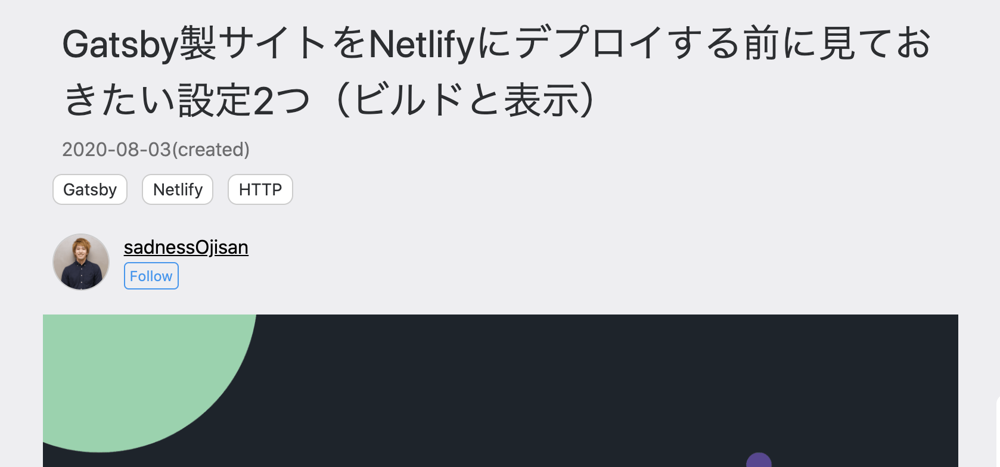
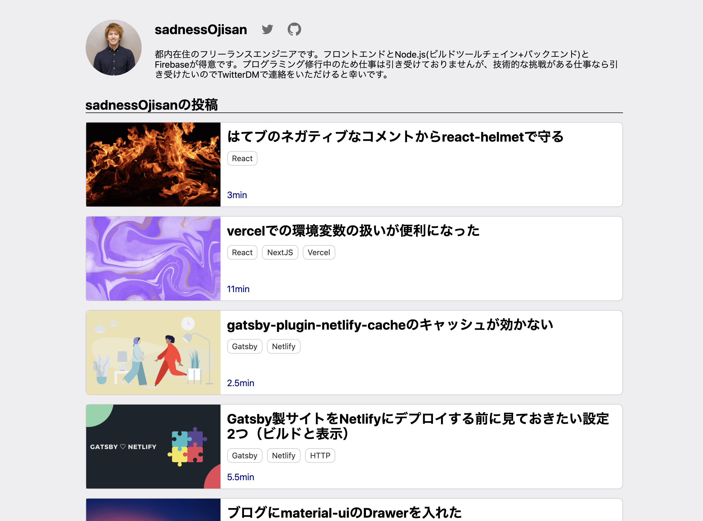

このブログにユーザーという概念を爆誕させました。 記事に著者を紐付けたりユーザーの詳細ページを持てるようにしました。 静的ブログかつ CMS を使わず入稿している Gatsby 環境でどうやってユーザーを保持し記事を紐付けたかというのが今回の内容です。
結論からいうと、**「ユーザー情報を yml で管理して、記事に外部キーとして userId を割り振り記事とユーザーを JOIN し、また yml のデータを使って gatsby-node でユーザーページを作成した」**です。
どういう変更をしたのか
今回の改修により、ブログの上部にこのようなリンクが生まれ

これをクリックすると、

といったユーザーページに遷移するようになりました。 （Follow ボタンは僕の Twitter へ遷移するだけです。）
ユーザー情報を yml で管理する
ユーザーのページを作るに当たってはどのような構造であれ、gatsby-node から読める形式であればなんでもマスタとして使えます。 そこでユーザー情報を管理する形式として yml で、
- id: "sadnessOjisan"
name: "sadnessOjisan"
image: "sadnessOjisan"
description: "都内在住のフリーランスエンジニアです。フロントエンドとNode.js(ビルドツールチェイン+バックエンド)とFirebaseが得意です。プログラミング修行中のため仕事は引き受けておりませんが、技術的な挑戦がある仕事なら引き受けたいのでTwitterDMで連絡をいただけると幸いです。"
twitterId: "sadnessOjisan"
gitHubId: "sadnessOjisan"
といった形式で定義しました。
そしてこれを gatsby-node 内から js-ymlで読み込みます。
const yaml = require("js-yaml")
const ymlDoc = yaml.safeLoad(
fs.readFileSync("./src/contents/user.yaml", "utf-8")
)
これで、ymlDoc としてユーザー情報の配列を入手しました。
あとはこの配列を回しながら createPage を実行すればユーザーページを作成できます。
ymlDoc.forEach(element => {
createPage({
path: `/users/${element.id}`,
component: userTemplate,
context: { userId: element.id, ...element },
})
})
記事ページと ユーザー情報を紐づける
各種記事ページでユーザー情報を使うので、記事とユーザーの紐付けを行います。
先ほどの yml の user 情報の中に id を入れてあるので、それを外部キーとして記事側にデータを持たせます。 そのために frontmatter に userId を追加し、これを執筆者とします。
---
path: /user-in-ssg-blog
created: "2020-08-09 09:00"
title: 静的ブログにユーザー概念を作った
visual: "./visual.png"
tags: [Gatsby]
userId: sadnessOjisan
isProtect: false
---
ここでの userId は gatsby-node.js を実行するときにビルドシステム側に伝えることができるので、この id を使ってビルド時に user 情報を取得、それを記事に埋め込みます。
// 記事ページ生成
contentsResult.data.posts.edges.forEach(({ node }) => {
// HINT: もしwriteUserが存在しなければ例外が発生してビルドが落ちるはず => 記事とユーザーが紐づいていない。
const writeUser = ymlDoc.filter(
item => item.id === node.frontmatter.userId
)[0]
createPage({
path: node.frontmatter.path,
component: blogPostTemplate,
context: { userId: writeUser.id, ...writeUser },
})
})
writeUser を作っているところが記事の userId と user yml を突合しているところです。 本当は GraphQL 実行するときに JOIN なんてことができたら良かったのですが、それは調べた限り難しそうだったので、このように filter で無理やり特定して user 情報を取得しています。
取得したユーザー情報は記事情報と JOIN します。 それを行っているのが、
createPage({
path: node.frontmatter.path,
component: blogPostTemplate,
context: { userId: writeUser.id, ...writeUser },
})
の context です。
context は生成されたページ側で pageContext という props 経由で取得できます。
そのためここに描画に必要なユーザー情報を全部含めておけば、記事ページ側で表示できます。
この方式の良いところは 重たい処理は全部ビルド時に行いランタイムでは JOIN が発生しないのでパフォーマンスが犠牲になっていないところです。
このようにgatsby-node.js や contextを使い倒していきましょう。
ユーザーページを作る
ユーザーページを作ります。 ユーザー情報だけであれば yml の情報だけで作れるので序盤に紹介した方法のみで済みますが、それに加えてユーザーが投稿した記事の一覧も表示させようと思います。
そのためにユーザーに紐づく記事をクエリで取得しましょう。
export const pageQuery = graphql`
query AllPostsByUserId($userId: String!) {
postsByUserId: allMarkdownRemark(
filter: { frontmatter: { userId: { eq: $userId } } }
) {
nodes {
timeToRead
frontmatter {
title
path
visual {
childImageSharp {
fluid(maxWidth: 800) {
...GatsbyImageSharpFluid
}
}
}
created(formatString: "YYYY-MM-DD")
tags
}
}
}
}
`
$userId をキーに検索をしています。
これは記事に紐づく userId の変数ですが、これが使えるのはgatsby-node.jsのcontext で宣言しているからです。
context: { userId: element.id, ...element }, などとして渡しているものが GraphQL の中で変数として使えます。
そして filter を使ってこの userId に紐づいた記事だけを抽出しました。
その結果記事一覧が手に入ります。
何が嬉しいか
僕以外も投稿できます!!!!!!!PR Welcome!!!!!!!!!!!!!!
ソースコード
このブログのコードを読むとイメージが付くと思います。